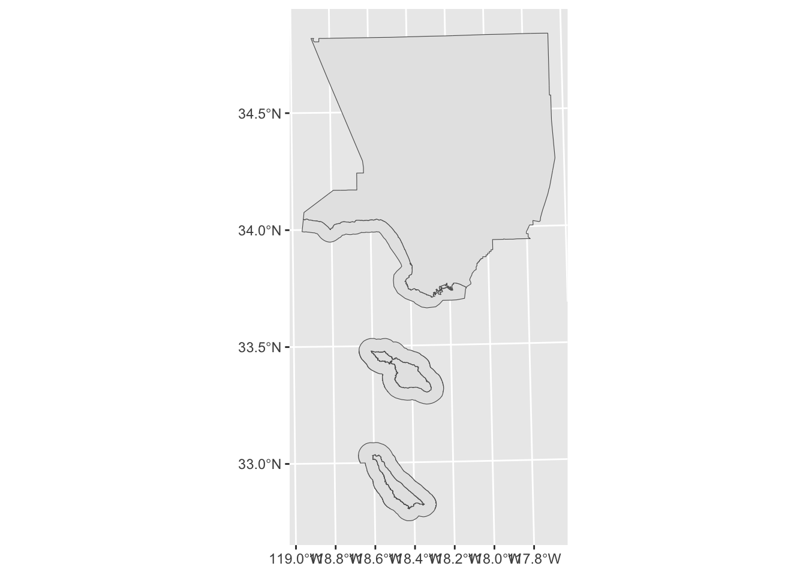

library(dplyr)
library(sf)
library(ggplot2)
library(mapview)
library(tigris)
library(stringr)Editing geospatial files
Sometimes we find a geospatial file that has more than we need. For instance, I downloaded a file that has all the state parks in California, but I only want the state parks in LA County. In this section we’ll cover how to extract data from existing files.
Find selected California counties
California state has a file that lists all the counties in California. https://gis.data.ca.gov/datasets/California::california-county-boundaries-and-identifiers/explore
Let’s get the boundaries for Los Angeles County.
Read the file with all the counties in California.
ca_counties <- read_sf('data/raw/California_County_Boundaries_and_Identifiers_Blue_Version_view_2716745428963682036/California_County_Boundaries_and_Identifiers.shp')glimpse(ca_counties)Rows: 73
Columns: 13
$ COUNTY <chr> "Alameda County", "Alpine County", "Amador County", "Butte …
$ COPRI <chr> "01000", "02000", "03000", "04000", "05000", "06000", "0700…
$ PLACE_NAME <chr> "Alameda County", "Alpine County", "Amador County", "Butte …
$ GEOID <chr> "06001", "06003", "06005", "06007", "06009", "06011", "0601…
$ PLACE_TYPE <chr> "County", "County", "County", "County", "County", "County",…
$ GNIS_ID <dbl> 1675839, 1675840, 1675841, 1675842, 1675885, 1675902, 16759…
$ LEGAL_PLAC <chr> "Alameda County", "Alpine County", "Amador County", "Butte …
$ PLACE_ABBR <chr> NA, NA, NA, NA, NA, NA, NA, NA, NA, NA, NA, NA, NA, NA, NA,…
$ CNTY_ABBR <chr> "ALA", "ALP", "AMA", "BUT", "CAL", "COL", "CCA", "DNE", "ED…
$ AREA_SqMi <dbl> 820.7918, 741.0404, 606.0190, 1677.8158, 1035.7786, 1156.65…
$ COASTAL <chr> NA, NA, NA, NA, NA, NA, NA, NA, NA, NA, NA, NA, NA, NA, NA,…
$ GlobalID <chr> "1ef554be-bce2-4a37-b205-c10f99330cb3", "8f6df77e-8ec0-4cda…
$ geometry <MULTIPOLYGON [m]> MULTIPOLYGON (((-136862.7 -..., MULTIPOLYGON (…We see the name of the county is in COUNTY column. Use filter() to select the rows for ‘Los Angeles County’.
LA <- ca_counties %>%
filter(COUNTY == 'Los Angeles County')
LASimple feature collection with 2 features and 12 fields
Geometry type: MULTIPOLYGON
Dimension: XY
Bounding box: xmin: 96851.82 ymin: -583500.2 xmax: 216620.6 ymax: -352271.1
Projected CRS: NAD83 / California Albers
# A tibble: 2 × 13
COUNTY COPRI PLACE_NAME GEOID PLACE_TYPE GNIS_ID LEGAL_PLAC PLACE_ABBR
* <chr> <chr> <chr> <chr> <chr> <dbl> <chr> <chr>
1 Los Angeles C… 19000 Los Angel… 06037 County 277283 Los Angel… <NA>
2 Los Angeles C… 19000 Los Angel… 06037 County 277283 Los Angel… <NA>
# ℹ 5 more variables: CNTY_ABBR <chr>, AREA_SqMi <dbl>, COASTAL <chr>,
# GlobalID <chr>, geometry <MULTIPOLYGON [m]>ggplot() +
geom_sf(data=LA) 
Use st_write() to save the state parks within LA County as a Shape file. The first argument is the map data we want to save, and the second argument is the file path.
st_write(LA, 'data/cleaned/los_angeles_county/los_angeles_county.shp')Find waterways in Los Angeles County
The US Census produces geospatial data that are linked to the Census data. This data is called Topologically Integrated Geographic Encoding and Referencing (TIGER). We can use the tigris package to download TIGER/Line shapefiles.
area_water() from tigris returns: The area hydrography shapefile contains the geometry and attributes of both perennial and intermittent area hydrography features, including ponds, lakes, oceans, swamps, glaciers, and the area covered by large streams represented as double-line drainage.
We can find waterways in LA County by passing the state and county to area_water().
area_water <- area_water(state = "CA", county="Los Angeles") ggplot() +
geom_sf(data = area_water)
Let’s find the LA River
Use names() to get the column names.
names(area_water)[1] "ANSICODE" "HYDROID" "FULLNAME" "MTFCC" "ALAND" "AWATER" "INTPTLAT"
[8] "INTPTLON" "geometry"Let’s look for FULLNAME equals ‘Los Angeles River’
la_river <- area_water %>%
filter(FULLNAME == 'Los Angeles River')
la_riverSimple feature collection with 0 features and 8 fields
Bounding box: xmin: NA ymin: NA xmax: NA ymax: NA
Geodetic CRS: NAD83
[1] ANSICODE HYDROID FULLNAME MTFCC ALAND AWATER INTPTLAT INTPTLON
[9] geometry
<0 rows> (or 0-length row.names)No records found.
Let’s use str_starts() from stringr package to look for items that start with ‘Los Angeles’
la_river <- area_water %>%
filter(str_starts(FULLNAME, 'Los Angeles'))
la_riverSimple feature collection with 3 features and 8 fields
Geometry type: POLYGON
Dimension: XY
Bounding box: xmin: -118.6292 ymin: 33.7672 xmax: -118.1685 ymax: 34.26373
Geodetic CRS: NAD83
ANSICODE HYDROID FULLNAME MTFCC ALAND AWATER INTPTLAT
1 <NA> 1104493447410 Los Angeles Riv H3010 0 420146 +34.1822808
2 <NA> 1104493447488 Los Angeles Riv H3010 280531 4988447 +34.1531554
3 <NA> 1102527993275 Los Angeles Riv H2030 0 58 +33.8743457
INTPTLON geometry
1 -118.5074316 POLYGON ((-118.6291 34.1721...
2 -118.2783531 POLYGON ((-118.4705 34.1634...
3 -118.1906547 POLYGON ((-118.1907 33.8743...We get three records. The river is called ‘Los Angeles Riv’
We want row 1 and 2. row 3 is a weird triangle
ggplot() +
geom_sf(data=la_river[1,]) +
geom_sf(data=la_river[2,]) 
ggplot() +
geom_sf(data=la_river[3,]) 
fixed_river <- la_river %>%
filter(HYDROID %in% c(1104493447410, 1104493447488))ggplot() +
geom_sf(data=fixed_river) 
Save the files
st_write(fixed_river, 'data/cleaned/los_angeles_river.geojson')
st_write(area_water, 'data/cleaned/la_county_waterareas.geojson')Find state parks in LA County
Let’s get the all the California state parks within Los Angeles county.
California State Parks has file that lists all the state parks in California. https://www.parks.ca.gov/?page_id=29682
California state has a file that lists all the counties in California. https://gis.data.ca.gov/datasets/California::california-county-boundaries-and-identifiers/explore
First we read the file with all state parks in California.
state_parks <- read_sf('data/raw/Park_Boundaries/ParkBoundaries.shp')The we read the file with LA County
LA_county <- read_sf('data/cleaned/los_angeles_county/los_angeles_county.shp')Compare CRS for the state parks map and the county map.
st_crs(state_parks) == st_crs(LA_county)[1] FALSEUse st_transform() to change the CRS of counties map to match the parks map.
LA_county <- st_transform(LA_county, crs = st_crs(state_parks))
st_crs(state_parks) == st_crs(LA_county)[1] TRUEUse st_intersects() to find the state parks within LA county. This is similar to how we got all the observations in Expo park in an earlier lesson.
LA_parks <- state_parks[st_intersects(state_parks, LA_county ) %>% lengths > 0,]Create a map showing LA County and state parks within LA County.
ggplot() +
geom_sf(data=LA_county) +
geom_sf(data=LA_parks, fill='yellow') Save the file.
st_write(LA_parks, 'data/cleaned/state_parks_los_angeles_county/state_parks_los_angeles_county.shp')Find national parks in LA County
Let’s get the National Parks within Los Angeles county.
National Park Boundaries https://catalog.data.gov/dataset/national-park-boundaries
parks_nps <- read_sf('data/raw/nps_boundary/nps_boundary.shp')
la_county <- read_sf('data/cleaned/los_angeles_county/los_angeles_county.shp')check if CRS are the same
st_crs(parks_nps) == st_crs(la_county)[1] FALSESet CRS of the parks to match LA County.
parks_nps <- st_transform(parks_nps, crs = st_crs(la_county) )
st_crs(parks_nps) == st_crs(la_county)[1] TRUEget national parks within LA county
ca_nps_parks <- parks_nps[st_intersects(parks_nps, la_county ) %>% lengths > 0,]
ggplot() +
geom_sf(data=la_county) +
geom_sf(data=ca_nps_parks, fill='yellow') Save the file.
st_write(ca_nps_parks, 'data/cleaned/nps_la_county.geojson')LA County Park Needs Assessment
The LA County Park Needs Assessment has layer for the entire county wide. We want to remove the county wide layer.
la_county_pna <- read_sf('data/raw/PNA_Demographics_for_Dashboard_(View_Layer_SDE)_8662424390864523907.geojson')
dim(la_county_pna)[1] 189 96la_county_pna_edit <- la_county_pna[-189, ]
dim(la_county_pna_edit)[1] 188 96ggplot(la_county_pna_edit) +
geom_sf()st_write(la_county_pna_edit, 'data/cleaned/LA_County_PNA_Demographics.geojson')